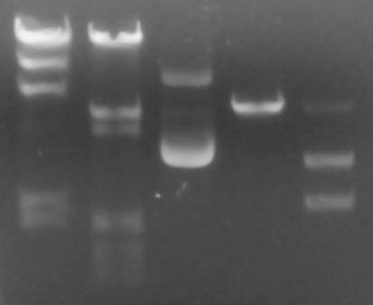
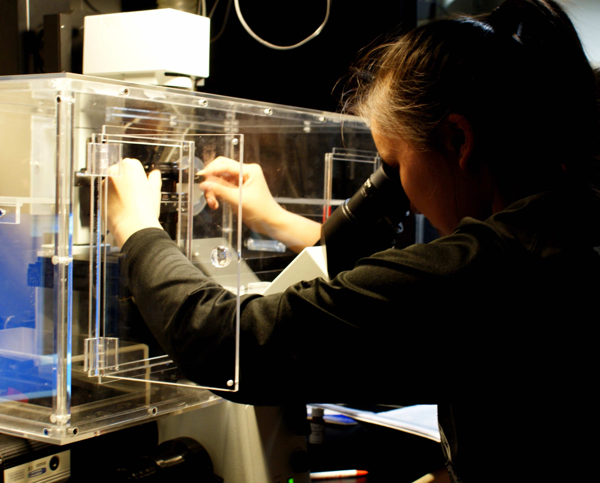
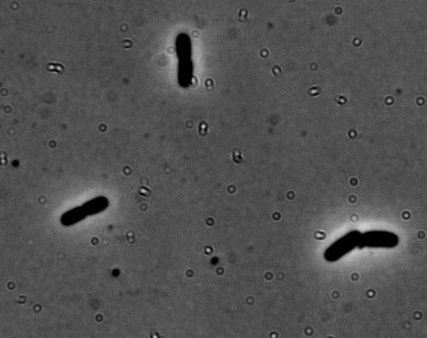
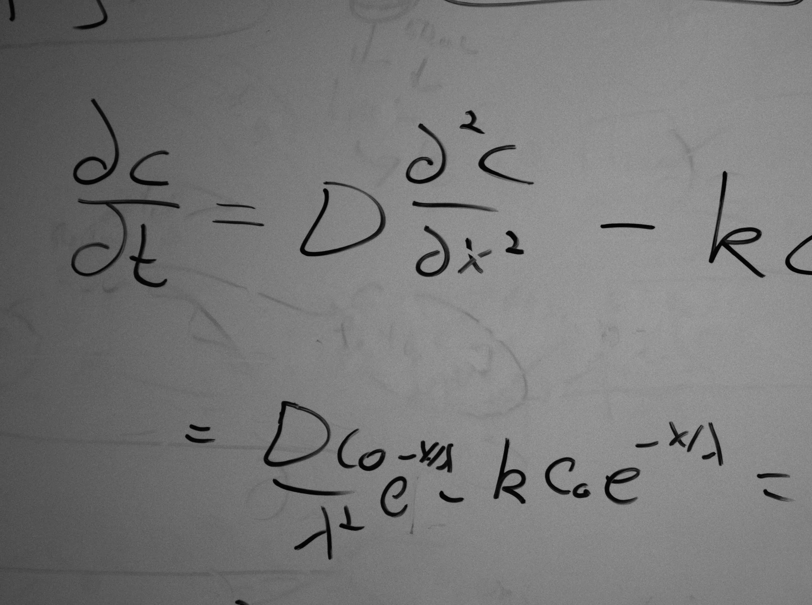
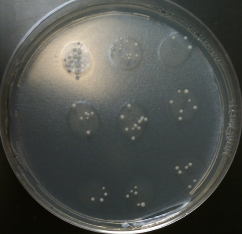
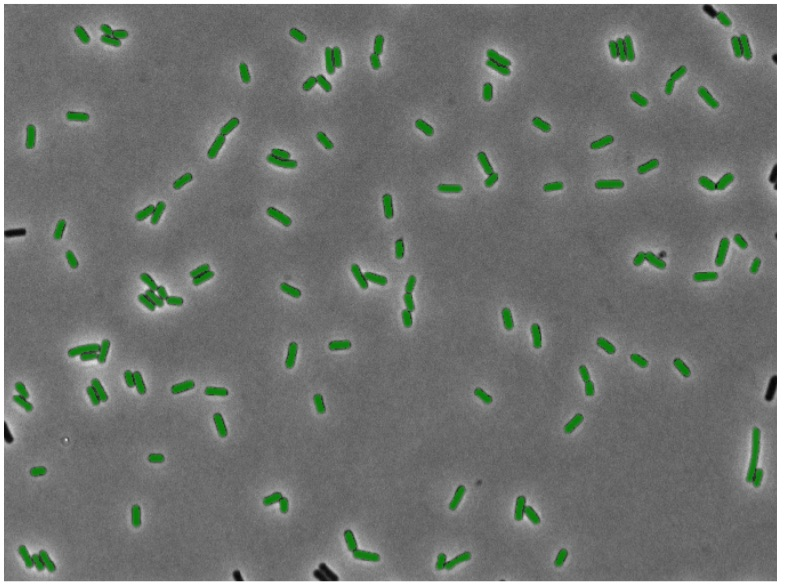

Lab Basics and the Restriction Digest. TAs: Nathan, Stella, and Annie.

The "molecular revolution" over the past 60 years has transformed our understanding of biology and has produced technologies that are ubiquitously used at the lab bench. In this lab, we will familiarize ourselves with the techniques of molecular biology. We will learn the basics of handling bacteria and biological solutions. Finally, we will use restriction enzymes to cut viral DNA at specific subsequences and characterize the results using gel electrophoresis.
Introduction to Microscopy and Biological Scales. TAs: Nathan, Soichi, Berk, Galen.
Much as the telescope has transformed our understanding of physics and astronomy, the microscope has done the same for biology. In this module, we will use high-powered microscopes to look into the diverse and incredibly mobile ecosystem that lives in the termite gut. We will learn the basic physical principles behind phase and fluorescent microscopy as well as the techniques for extracting termite guts, which we will use later in the course.

Bacteria Growth: E. coli. TAs: Tal, Muir, Chatt, Stella

Escherichia coliis a biologist's best friend. These bacteria, roughly two microns in length, have provided the foundation of our knowledge on diverse topics including cell division, motility, gene regulation, signal transduction, and genetics. To this day, E. coli is studied as intensely as ever and remains a work horse for molecular biology. This module will explore how E. coli growth is affected by an antibiotic and study its growth at both the population and the single-cell level.
Drosophila Embryogenesis. TAs: Muir, Galen, Soichi.
Ever wonder how your head knew to grew at the anterior region of your body and your posterior at your posterior? It all comes down to concentrations of morphogens during development! We will investigate embryogenesis of the model organism Drosophila melanogaster, also lovingly known as the fruit fly. Using fundamentals of genetics and our skills in imaging, we will test the French flag model of morphogenesis (which is found in every developmental biology textbook)in order to understand how concentrations of morphogens can affect the development of the cephalic furrow in the fruit fly.

Caenorhabditis elegans Optogenetics. TAs: Muir, Kevin, Stella
Much of animal behavior is dictated by molecular behavior at the cell level. To adequately understand how organisms make decisions in their day to day (and sometimes millisecond to millisecond) life, we must be able to perturb and measure cellular dynamics. In this module, we will use optogenetics to understand neural circuits and to control the behavior of C. elegans. Optogenetics relies on genetically-encoded, light-activated proteins called opsins, which can be embedded into the membranes of neurons. The protein is activated with specific wavelengths of light. In turn, a trans-membrane channel opens that lets positively charged ions flow into the cell, simulating an action potential. In the experiment, we use this method to activate individual neurons and see the effect one cell can have on C. elegans behavior.
The Luria-Delbrück Fluctuation Test TAs: Berk, Tal, Annie.
Organisms evolve. But how? The Luria-Delbrück experiment explores the statistical basis of mutation and adaptation. We will study how mutations arise in a population in a clever experiment that involves another widely used model organism, the budding yeast S. cerevisiae. We will couple wet-lab experimental work with computational simulation to differentiate between adaptive mutations, occurring in response to environmental stress, and random mutation, occurring independently.

Gene Regulation: LacI Titration. TAs: Tal, Galen.

What makes a human eye cell different than a skin cell? Why can some bacteria become pathogenic on the turn of a dime? Regulation of gene expression of often highly tuned to specific chemical and physical signals regarding the cell's environment, health, and even what other bacteria are nearby. In this module, we'll explore how gene expression is regulated at the transcriptional level using microscopy paired with statistical mechanics. We will determine the number of LacI repressors (the transcriptional repressor of the lac operon, necessary for lactose metabolism) in various E. coli mutants.
Single Molecule experimentation and V(D)J Recombination. TAs: Soichi, Nathan, Annie, Chatt.
If our genomes only contain about 20,000 to 25,000 genes, how do we generate X unique proteins that support our adaptive immune system and help us fight against infection? ...